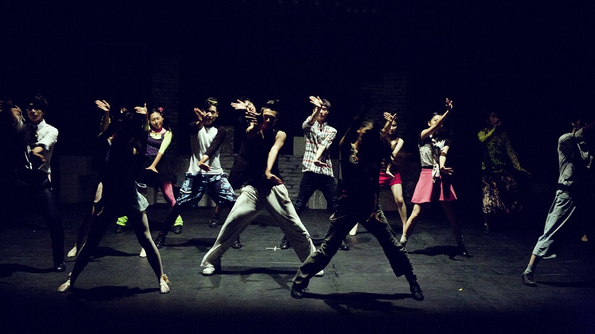

A tánc foglalkozások kiváló lehetőséget kínálnak mindenkinek, aki szeretné felfedezni a tánc varázslatos világát és kibontakoztatni kreativitását. Ezek a foglalkozások nemcsak a tánctudás fejlesztésére szolgálnak, hanem arra is, hogy a résztvevők jobban megismerjék önmagukat és másokat, valamint magabiztosabban mozogjanak különböző élethelyzetekben. A közös munka során a résztvevők megtanulják, hogyan dolgozzanak csapatban, és hogyan hozzanak létre egy teljes táncelőadást az ötlettől a megvalósításig.
A testtudatosság és mozgáskészség fejlesztő foglalkozások célja, hogy segítsenek a résztvevőknek magabiztosabban és hatékonyabban mozogni mindennapi helyzetekben és professzionális környezetben egyaránt. A foglalkozások során a résztvevők megismerkedhetnek a tánctechnika alapjaival, a helyes testtartással, a ritmusérzékkel és a megfelelő légzés technikáival. Emellett gyakorolhatják a különböző táncstílusokat, hogy felkészüljenek a fellépések, a versenyek és az egyéb mozgásos kihívásokra. A jó mozgáskészség nemcsak a táncparketten, hanem az élet minden területén kulcsfontosságú.
Ha érdekel a tánc világa, vagy szeretnéd fejleszteni mozgáskészségedet, ne habozz csatlakozni hozzánk! Foglalkozásaink változatosak és minden korosztály számára nyitottak. Legyen szó kezdőkről vagy tapasztaltabb táncosokról, mindenki megtalálhatja a számára legmegfelelőbb programot. Gyere, és tapasztald meg te is, hogyan válhat a tánc és a mozgáskészség fejlesztése önbizalmad és személyiséged megerősítésének eszközévé! Jelentkezz most, és lépj a fejlődés útjára velünk!
Tánc

Mozogj a ritmusra és fejezd ki magad tánccal! A táncfoglalkozások során különböző táncstílusokat tanulhatsz meg, mint például a klasszikus balett, a kortárs tánc, a hip-hop és a társastánc. Fejleszd ritmusérzékedet, testtudatosságodat és koordinációdat, miközben szabadon engeded kreativitásodat és érzelmeidet a mozgásban. A tánc kiváló eszköz az önkifejezésre, és lehetőséget ad arra, hogy új barátokat szerezz és részt vegyél közös előadásokban.